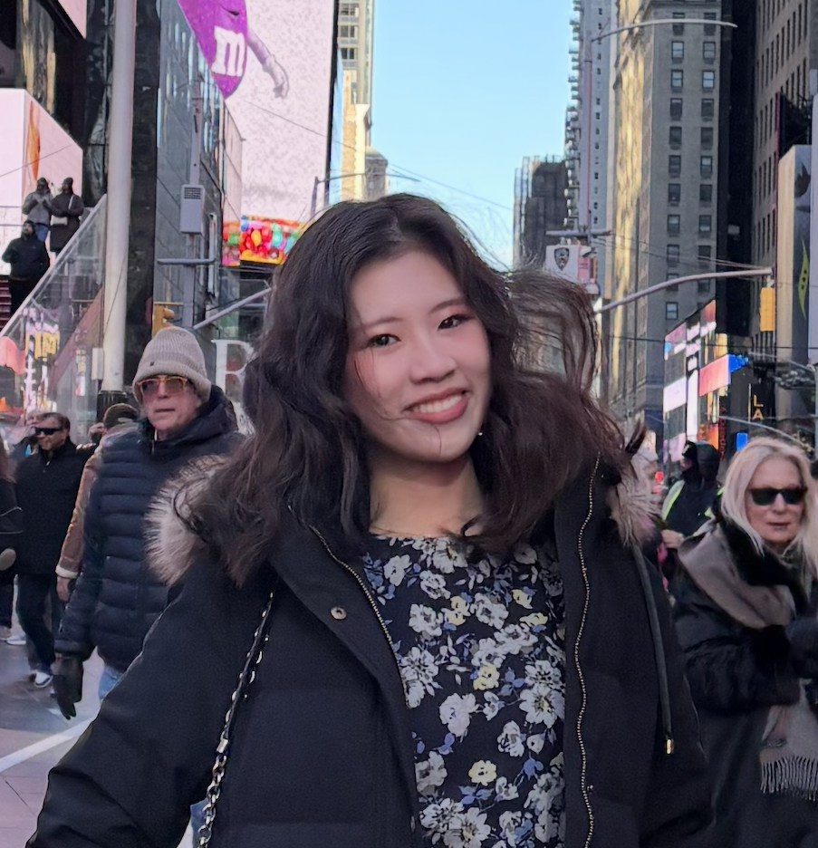
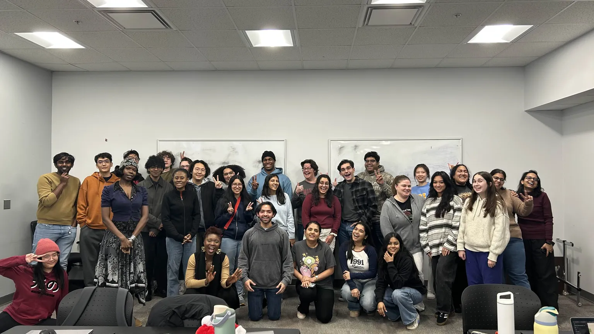
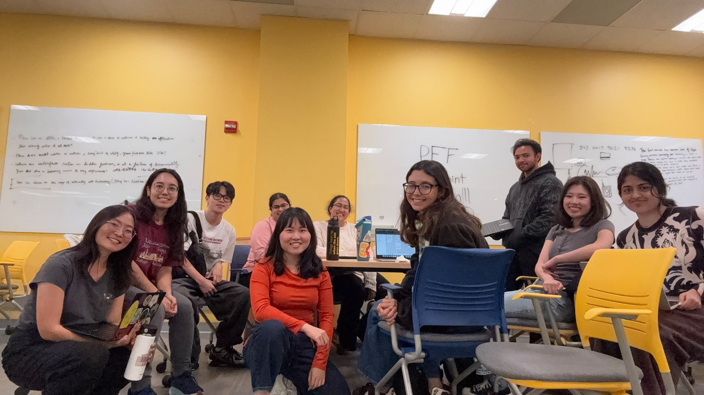
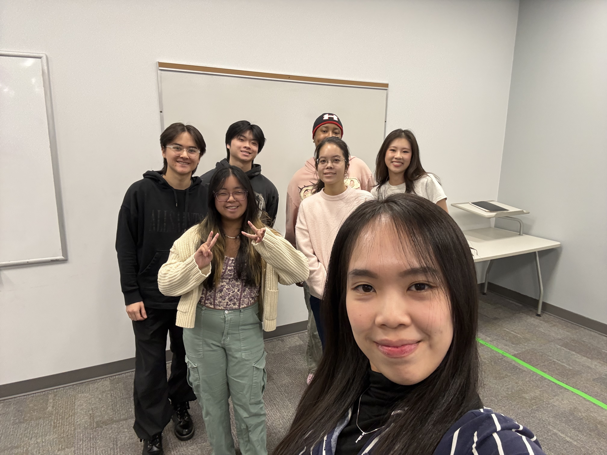

About Me

I'm Grace,
A UX designer based in Maryland
I'm a UX designer and illustrator pursuing my M.S. in Human-Computer Interaction at the University of Maryland. A history degree taught me to look at every problem from multiple perspectives, and illustrating for UCLA's Daily Bruin and building front-end projects pulled me toward UX. Today I turn user research into storyboards and prototypes, with a focus on accessible design, to transform complicated experiences into practical, beautiful digital solutions that foster meaningful tech use.


